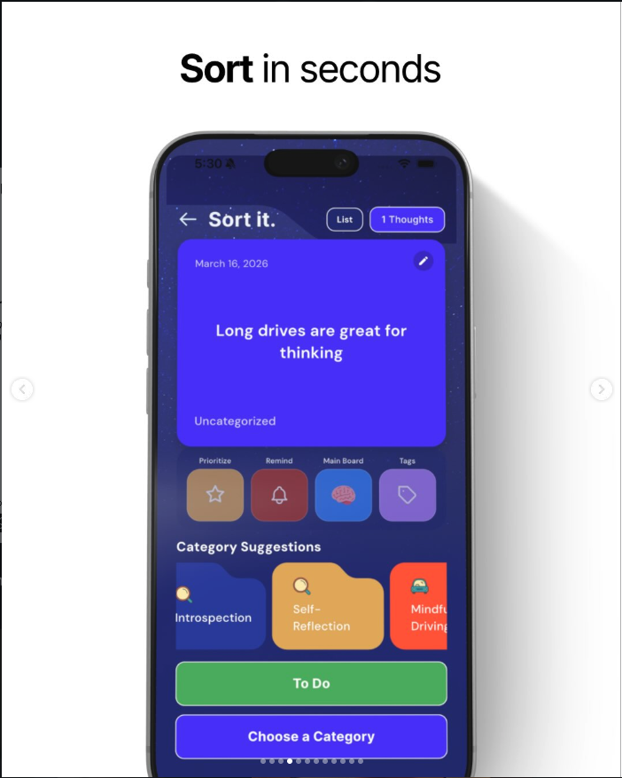
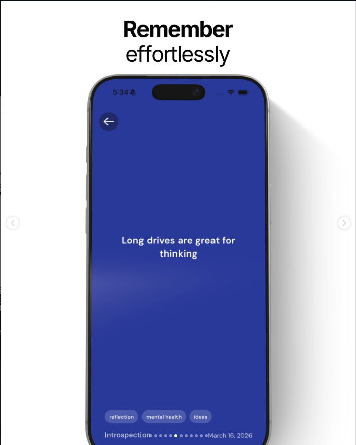

Capture Thoughts Before They're Gone
Thought Sweep is your digital memory—inbox, tags, and search in one place so ideas never evaporate between meetings, commutes, or midnight flashes of insight.



What is Thought Sweep?
Thought Sweep is a digital memory companion for busy minds. Whether you are commuting, waking up with half-formed ideas, or juggling projects at work, it gives you one calm place to jot thoughts in seconds before they disappear.
Entries sync into simple structures—tags, timelines, and quick search—so you can turn scattered notes into clarity without building a sprawling wiki. It is built for speed: open, capture, and move on with your day.
Features
Everything is tuned for frictionless capture first; refinement and search come second, so you never pause long enough to lose the thought.
- Instant capture: Quick entry from one tap or shortcut, with optional voice and smart suggestions so you stay in flow.
- Lightweight organization: Tags, favorites, and a timeline view keep related notes together without heavy filing systems.
- Fast recall: Full-text search and filters surface what you need when you need it, on phone or desktop.
- Private by design: Your thoughts stay yours—encryption in transit and clear export options when you want to back up or move data.
At a glance
| Feature | Purpose | Benefit |
|---|---|---|
| Quick capture | Record ideas before they fade | Less mental load; fewer missed sparks |
| Tags & search | Group and find notes without folders | Faster navigation across projects |
| Cross-device sync | Same memory at desk and on the go | Continuity wherever you work |
See it in action
Browse a short walkthrough of capturing and reviewing thoughts in Thought Sweep.
Tell us what you think
Links
Learn from design-focused platforms such as Apple or reach our team at hello@thoughtsweep.app.